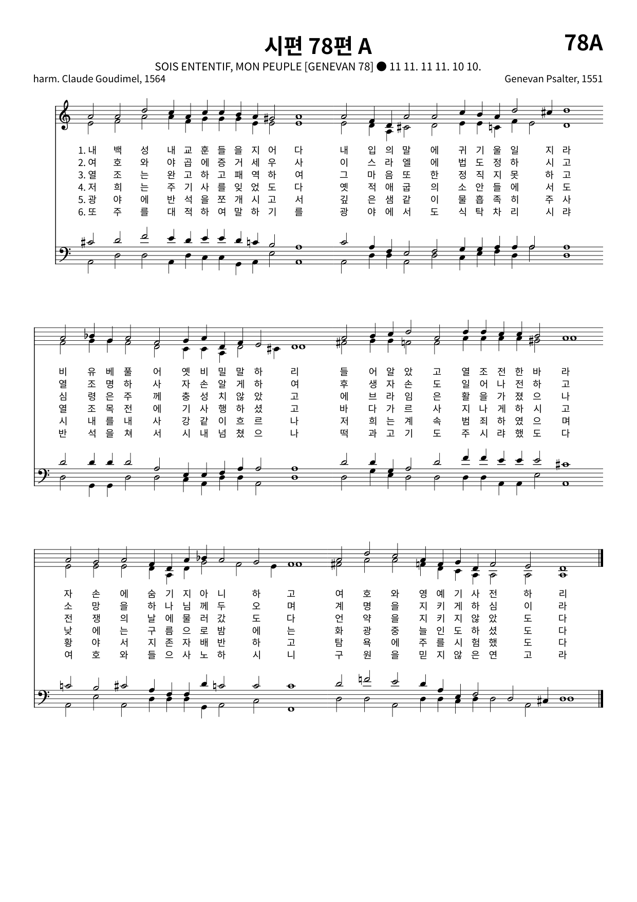

Psalm 78A
SOIS ENTENTIF, MON PEUPLE [GENEVAN 78] · 11 11. 11 11. 10 10.
English title: Give Ear, My People, Listen to My Teaching
Tune: Genevan Psalter, 1551 · Harmony: Claude Goudimel, 1564 · Lyrics: Korean adaptation of Psalm 78 from the Korean Revised Version (AI draft adaptation · not yet theologically reviewed) · 6 stanzas
Psalm 78 is divided into 3 tunes: A B C · This tune contains stanzas 1–6 of the Psalm 78 lyrics.
Score PDF MusicXML (for printing) MusicXML (for accompaniment, with prelude and repeats) Read Psalm 78 (Korean Revised Version)
Score
← Psalm 77 ListAccompaniment (in preparation)Psalm 78B →
Lyrics (Korean)
Stanza 1
내 백성 내 교훈 들을지어다
내 입의 말에 귀 기울일지라
비유 베풀어 옛 비밀 말하리
들어 알았고 열조 전한 바라
자손에 숨기지 아니하고
여호와 영예 기사 전하리
내 백성 내 교훈 들을지어다
내 입의 말에 귀 기울일지라
비유 베풀어 옛 비밀 말하리
들어 알았고 열조 전한 바라
자손에 숨기지 아니하고
여호와 영예 기사 전하리
Stanza 2
여호와 야곱에 증거 세우사
이스라엘에 법도 정하시고
열조 명하사 자손 알게 하여
후생 자손도 일어나 전하고
소망을 하나님께 두오며
계명을 지키게 하심이라
여호와 야곱에 증거 세우사
이스라엘에 법도 정하시고
열조 명하사 자손 알게 하여
후생 자손도 일어나 전하고
소망을 하나님께 두오며
계명을 지키게 하심이라
Stanza 3
열조는 완고하고 패역하여
그 마음 또한 정직지 못하고
심령은 주께 충성치 않았고
에브라임은 활을 가졌으나
전쟁의 날에 물러갔도다
언약을 지키지 않았도다
열조는 완고하고 패역하여
그 마음 또한 정직지 못하고
심령은 주께 충성치 않았고
에브라임은 활을 가졌으나
전쟁의 날에 물러갔도다
언약을 지키지 않았도다
Stanza 4
저희는 주 기사를 잊었도다
옛적 애굽의 소안 들에서도
열조 목전에 기사 행하셨고
바다 가르사 지나게 하시고
낮에는 구름으로 밤에는
화광 중 늘 인도하셨도다
저희는 주 기사를 잊었도다
옛적 애굽의 소안 들에서도
열조 목전에 기사 행하셨고
바다 가르사 지나게 하시고
낮에는 구름으로 밤에는
화광 중 늘 인도하셨도다
Stanza 5
광야에 반석을 쪼개시고서
깊은 샘 같이 물 흡족히 주사
시내를 내사 강 같이 흐르나
저희는 계속 범죄하였으며
황야서 지존자 배반하고
탐욕에 주를 시험했도다
광야에 반석을 쪼개시고서
깊은 샘 같이 물 흡족히 주사
시내를 내사 강 같이 흐르나
저희는 계속 범죄하였으며
황야서 지존자 배반하고
탐욕에 주를 시험했도다
Stanza 6
또 주를 대적하여 말하기를
광야에서도 식탁 차리시랴
반석을 쳐서 시내 넘쳤으나
떡과 고기도 주시랴 했도다
여호와 들으사 노하시니
구원을 믿지 않은 연고라
또 주를 대적하여 말하기를
광야에서도 식탁 차리시랴
반석을 쳐서 시내 넘쳤으나
떡과 고기도 주시랴 했도다
여호와 들으사 노하시니
구원을 믿지 않은 연고라